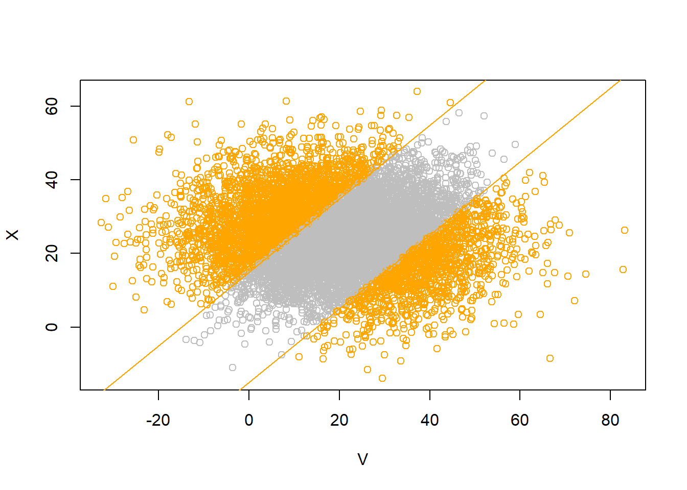
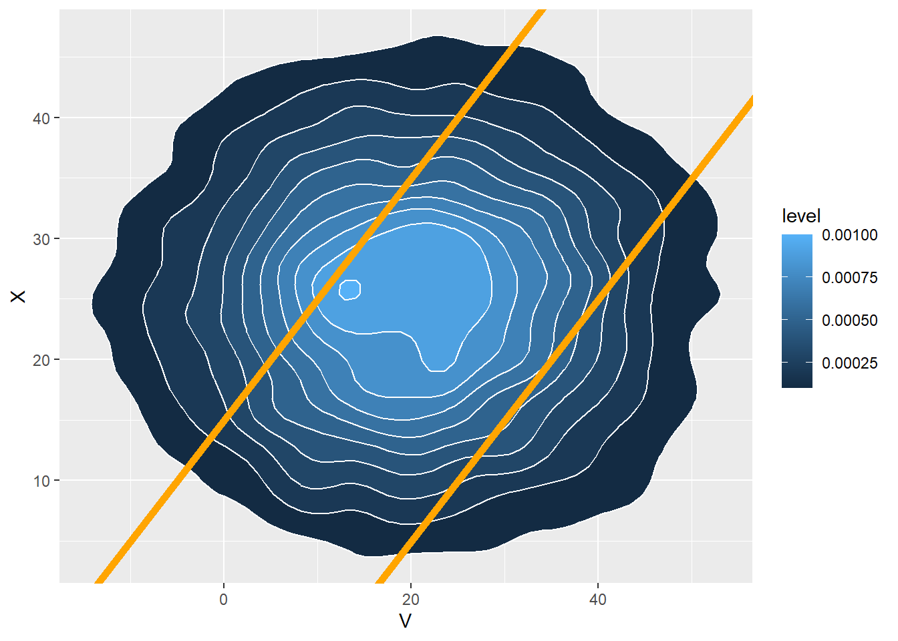
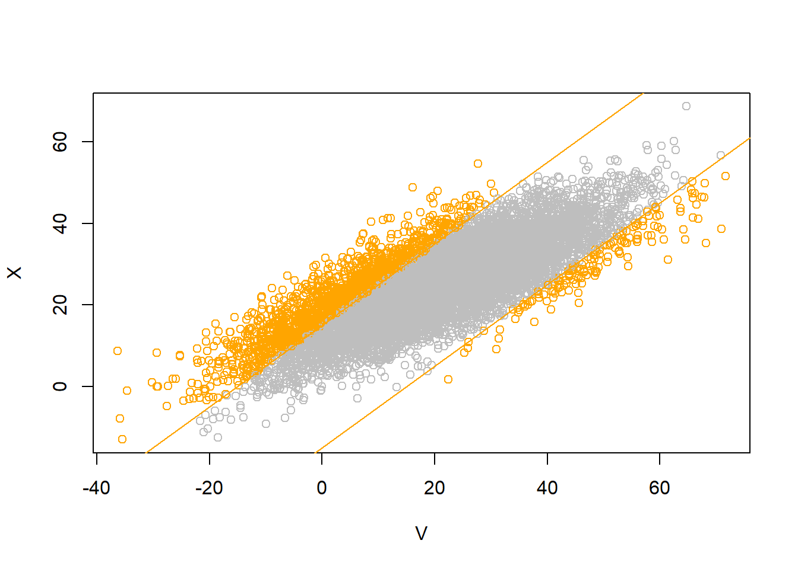
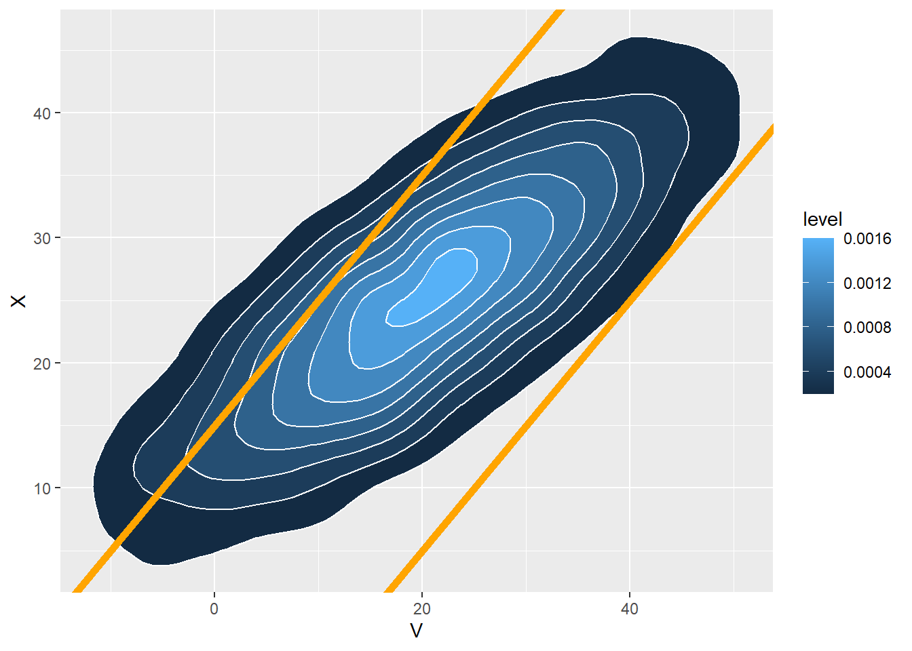
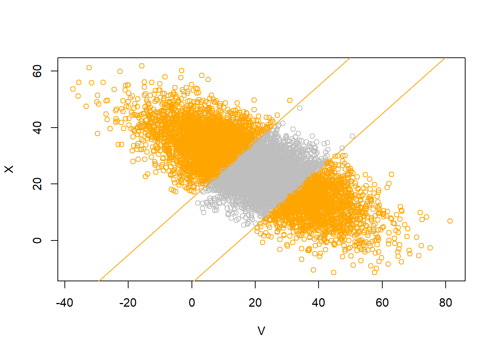
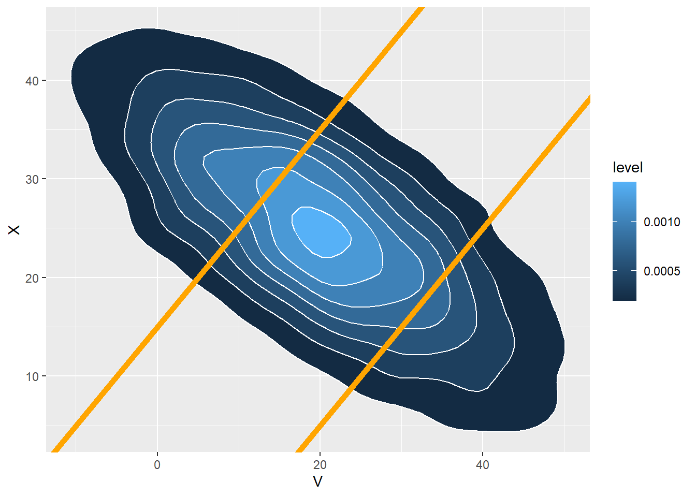

pnorm((0 - 20) / 15)[1] 0.09121122pnorm(0, 20, 15)[1] 0.09121122(Continuing from a previous HW) The latest series of collectible Lego Minifigures contains 3 different Minifigure prizes (labeled 1, 2, 3). Each package contains a single unknown prize. Suppose we only buy 3 packages and we consider as our sample space outcome the results of just these 3 packages (prize in package 1, prize in package 2, prize in package 3). For example, 323 (or (3, 2, 3)) represents prize 3 in the first package, prize 2 in the second package, prize 3 in the third package. Let \(X\) be the number of distinct prizes obtained in these 3 packages. Let \(Y\) be the number of these 3 packages that contain prize 1. Suppose that each package is equally likely to contain any of the 3 prizes, regardless of the contents of other packages; let \(\text{P}\) denote the corresponding probability measure.
Each row of the table below represents a different conditional distribution of \(Y\) given \(X=x\). For example, the row for \(x=1\) represents the conditional distribution of \(Y\) given \(X=1\): Given \(X=1\), \(Y\) is 0 with probability 2/3 and 3 with probability 1/3.
| \(y\) | |||||
| 0 | 1 | 2 | 3 | Total | |
| \(x\) | |||||
| 1 | 2/3 | 0 | 0 | 1/3 | 1 |
| 2 | 1/3 | 1/3 | 1/3 | 0 | 1 |
| 3 | 0 | 1 | 0 | 0 | 1 |
Take expected values according to each conditional distribution. In general, \(\text{E}(Y|X=x)\) depends on \(x\), but in this case \(\text{E}(Y|X=x) = 1\) for all values of \(x\).; regardless of how many distinct prizez people obtain in their, the average number of prize 1s obtains is 1.
\[\begin{align*} x & \quad \text{E}(Y|X=x)\\ 1 & \quad 0(2/3) + 3(1/3) = 1\\ 2 & \quad 0(1/3) + 1(1/3) + 2(1/3) = 1\\ 3 & \quad 1(1) = 1 \end{align*}\]
Each column of the table below represents a different conditional distribution of \(X\) given \(Y=y\). For example, the column for \(y=1\) represents the conditional distribution of \(X\) given \(Y=1\): Given \(Y=1\), \(X\) is 1 with probability 1/4 and 2 with probability 3/4.
| \(y\) | ||||
| 0 | 1 | 2 | 3 | |
| \(x\) | ||||
| 1 | 1/4 | 0 | 0 | 1 |
| 2 | 3/4 | 1/2 | 1 | 0 |
| 3 | 0 | 1/2 | 0 | 0 |
| Total | 1 | 1 | 1 | 1 |
Take expected values according to each conditional distribution. For example, \(\text{E}(X|Y = 0) = 1.75\); among the people who never get prize 1 in their 3 boxes, the average number of distinct prizes they obtain is 1.75.
\[\begin{align*} y & \quad \text{E}(X|Y=y)\\ 0 & \quad 1(1/4) + 2(3/4) = 1.75\\ 1 & \quad 2(1/2) + 3(1/2) = 2.5\\ 2 & \quad 2(1) = 2\\ 3 & \quad 1(1) = 1 \end{align*}\]
Simulate a value of \(X\) from its marginal distribution: 1, 2, 3 with probability 3/27, 18/27, 6/27 (see previous HW for spinner). Given the value of \(x\), simulate \(Y\) from the appropriate conditional distribution of \(Y\) given \(X=x\):
Simulate many \((X, Y)\) pairs using any appropriate method.
Xavier and Yolanda are playing roulette. They both place bets on red on the same 3 spins of the roulette wheel before Xavier has to leave. (Remember, the probability that any bet on red on a single spin wins is 18/38.) After Xavier leaves, Yolanda places bets on red on 2 more spins of the wheel. Let \(X\) be the number of bets that Xavier wins and let \(Y\) be the number that Yolanda wins.
| \(x\), \(y\) | 0 | 1 | 2 | 3 | 4 | 5 |
|---|---|---|---|---|---|---|
| 0 | 0.0404 | 0.0727 | 0.0327 | 0 | 0 | 0 |
| 1 | 0 | 0.109 | 0.1963 | 0.0883 | 0 | 0 |
| 2 | 0 | 0 | 0.0981 | 0.1766 | 0.0795 | 0 |
| 3 | 0 | 0 | 0 | 0.0294 | 0.053 | 0.0238 |
\(X\) has a Binomial distribution with parameters \(n=3\) and \(p = 18/38\), so \(\text{E}(X) = np = 3(18/38) = 1.42\).
\(Y\) has a Binomial distribution with parameters \(n=5\) and \(p = 18/38\), so \(\text{E}(X) = np = 5(18/38) = 2.37\).
In the first 3 bets Yolanda wins the same number of games as Xavier, and Yolanda only plays two more games. So \(Y\) can’t be more than \(X+2\), and \(Y\) can’t be less than \(X\).
To have \(X = 2\) and \(Y=3\) we need to have exactly two wins in the first 3 bets (where both play) exactly 1 win in the last 2 bets (Yolanda only). The number of wins in the first 3 bests is Binomial(3, 18/38), the number of wins in the last two bets is Binomial(2, 18/38) and the first 3 bets are independent of the last two bets. So the probability is dbinom(2, 3, 18 / 38) * dbinom(1, 2, 18 / 38) = 0.177 or \[
p_{X, Y}(2, 3) = \text{P}(X = 2, Y = 3) = \left(\binom{3}{1}(18/38)^2(20/38)^1\right)\left(\binom{2}{1}(18/38)^1(20/38)^1\right) = 0.177
\]
No. \(X\) and \(Y\) are not independent. For example \(\text{P}(X = 0) = 0.15\) but \(\text{P}(X=0|Y = 0) = 1\).
Sum over the \((X, Y)\) pairs for which \(X + Y = 4\): (0, 4), (1, 3), (2, 2), (3, 1), (4, 0). So 0 + 0.0883 + 0.0981 + 0 = 0.1864. Suppose they do this every time they visit the casino. Over many visits to the casino, together they win a total of 4 bets in 18.6% of visits
The possible values are \(0, 1, \ldots, 8\). Fill in the probabilities like in the previous part. (Alternative \(X + Y\) has the same distribution as \(2X + Z\) where \(X\) and \(Z\) are independent and \(Z\) (number of wins in last two bets) has a Binomial(2, 18/38) distribution).
| Value | Probability |
|---|---|
| 0 | 0.0404 |
| 1 | 0.0727 |
| 2 | 0.1417 |
| 3 | 0.1963 |
| 4 | 0.1864 |
| 5 | 0.1766 |
| 6 | 0.1089 |
| 7 | 0.0530 |
| 8 | 0.0238 |
From the table \(\text{E}(X+Y) = 0(0.404) + 1(0.0727 + \cdots + 8(0.0238) = 3.79\), and \(\text{E}(X)+\text{E}(Y) = 3(18/38) + 5(18/38) = 3.79\). (These are exactly equal; any differences are just rounding errors)
There is a positive association so \(\text{Var}(X+Y)\) will be greater than \(\text{Var}(X) + \text{Var}(Y)\).
Percent returns for assets \(X\), \(Y\), and \(Z\) follow a joint distribution with
An investment portfolio has 60% of its funds in asset X, 30% in asset Y, and 10% in asset Z.
Devi and Paxton are meeting. Arrival times are measured in minutes after noon, with negative times representing arrivals before noon. Devi’s arrival time follows a Normal distribution with mean 20 and SD 15 minutes, and Paxton’s arrival time follows a Normal distribution with mean 25 and SD 10 minutes, independently of each other.
For each of the following, find the appropriate standardized value and make a ballpark estimate of the probability. Then use software to compute the probability.
pnorm((0 - 20) / 15)[1] 0.09121122pnorm(0, 20, 15)[1] 0.091211221 - pnorm((0 - 5) / 18)[1] 0.60940851 - pnorm(0, 5, 18)[1] 0.60940851 - pnorm((15 - 5) / 18) + pnorm((-15 - 5) / 18)[1] 0.42251761 - pnorm(15, 5, 18) + pnorm(-15, 5, 18)[1] 0.4225176N_rep = 10000
V = rnorm(N_rep, 20, 15)
X = rnorm(N_rep, 25, 10)
sum(abs(V - X) > 15) / N_rep[1] 0.4127cor(V, X)[1] -0.002907176mean(V)[1] 20.03742sd(V)[1] 14.95765mean(X)[1] 24.97118sd(X)[1] 10.00516plot(V, X, col = ifelse(abs(V - X) > 15, "orange", "gray"))
abline(a = 15, b = 1, col = "orange")
abline(a = -15, b = 1, col = "orange")
ggplot(data.frame(V, X), aes(x = V, y = X)) +
stat_density_2d(aes(fill = ..level..), geom = "polygon", colour="white") +
geom_abline(slope = 1, intercept = c(-15, 15), col = "orange", size = 2)Warning: Using `size` aesthetic for lines was deprecated in ggplot2 3.4.0.
ℹ Please use `linewidth` instead.Warning: The dot-dot notation (`..level..`) was deprecated in ggplot2 3.4.0.
ℹ Please use `after_stat(level)` instead.
(Continued.) Devi and Paxton are meeting. Arrival times are measured in minutes after noon, with negative times representing arrivals before noon. Devi’s arrival time follows a Normal distribution with mean 20 and SD 15 minutes, and Paxton’s arrival time follows a Normal distribution with mean 25 and SD 10 minutes.
For each of the following, find the appropriate standardized value and make a ballpark estimate of the probability. Then use software to compute the probability.
Assume the pairs of arrival times follow a Bivariate Normal distribution with correlation 0.8
Let \(V\) be Devi’s arrival time and let \(X\) be Paxton’s arrival time.
pnorm((10 - 2) / 9)[1] 0.8129686pnorm(10, 2, 9)[1] 0.81296861 - pnorm((15 - 5) / 9.2) + pnorm((-15 - 5) / 9.2)[1] 0.15338381 - pnorm(15, 5, 9.2) + pnorm(-15, 5, 9.2)[1] 0.1533838N_rep = 10000
V = rnorm(N_rep, 20, 15)
X = rnorm(N_rep, 25 + 10 * 0.8 * (V - 20) / 15, 10 * sqrt(1 - 0.8 ^ 2))
sum(abs(V - X) > 15) / N_rep[1] 0.1601cor(V, X)[1] 0.8005025mean(V)[1] 19.87879sd(V)[1] 14.9741mean(X)[1] 24.9555sd(X)[1] 9.978559plot(V, X, col = ifelse(abs(V - X) > 15, "orange", "gray"))
abline(a = 15, b = 1, col = "orange")
abline(a = -15, b = 1, col = "orange")
ggplot(data.frame(V, X), aes(x = V, y = X)) +
stat_density_2d(aes(fill = ..level..), geom = "polygon", colour="white") +
geom_abline(slope = 1, intercept = c(-15, 15), col = "orange", size = 2)
(Continued.) Devi and Paxton are meeting. Arrival times are measured in minutes after noon, with negative times representing arrivals before noon. Devi’s arrival time follows a Normal distribution with mean 20 and SD 15 minutes, and Paxton’s arrival time follows a Normal distribution with mean 25 and SD 10 minutes.
For each of the following, find the appropriate standardized value and make a ballpark estimate of the probability. Then use software to compute the probability.
Assume the pairs of arrival times follow a Bivariate Normal distribution with correlation -0.7
pnorm((10 - 35.75) / 10.7)[1] 0.008052175pnorm(10, 35.75, 10.7)[1] 0.0080521751 - pnorm((15 - 5) / 23.1) + pnorm((-15 - 5) / 23.1)[1] 0.52584321 - pnorm(15, 5, 23.1) + pnorm(-15, 5, 23.1)[1] 0.5258432N_rep = 10000
V = rnorm(N_rep, 20, 15)
X = rnorm(N_rep, 25 + 10 * (-0.7) * (V - 20) / 15, 10 * sqrt(1 - 0.7 ^ 2))
sum(abs(V - X) > 15) / N_rep[1] 0.5271cor(V, X)[1] -0.708745mean(V)[1] 19.98745sd(V)[1] 15.09517mean(X)[1] 24.96717sd(X)[1] 10.05236plot(V, X, col = ifelse(abs(V - X) > 15, "orange", "gray"))
abline(a = 15, b = 1, col = "orange")
abline(a = -15, b = 1, col = "orange")
ggplot(data.frame(V, X), aes(x = V, y = X)) +
stat_density_2d(aes(fill = ..level..), geom = "polygon", colour="white") +
geom_abline(slope = 1, intercept = c(-15, 15), col = "orange", size = 2)